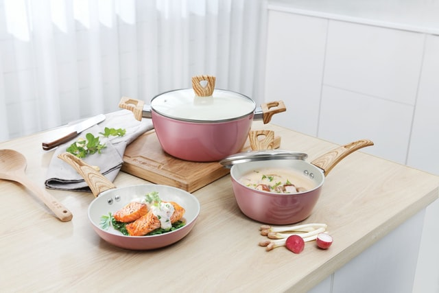

Tips de cocina

Tip 1
Como conservar condimentos
- Guarda las especias juntas, eligiendo un lugar fresco, seco y resguardado de la luz solar.
- Lo mejor es optar por alguno de los muebles de la cocina, elige un lugar bien ventilado y lejos del vapor que se genera al cocinar.
- Pon granitos de arroz en algunos envases. Los granos de arroz absorben la humedad de cualquier especia o condimento, por lo que te permite prevenir la humedad. Es ideal para ponerlo en los especieros de sal, que suele aglomerarse.

Tip 2
Consejos de uso para mantener y cuidar tus caserolas
- Nunca utilizar las pieza en hornos de cocina, microondas, brasas directas o inducción.
- Evitar el uso de fuegos máximos en la pieza vacía
- Las técnicas de cocción a la sal, decoloran y desgastan la superficie recomendamos evitarlas.
- NO Utilizar utenisilios metpalicos y/o cortantes.
- NO utilizar aceite en aerosol para evitar decoloraciones.

Tip 3
Organizar el espacio antes de cocinar
- Comprueba que dispones de todos los ingredientes que necesitas para elaborar tu receta. Este paso previo te evitará estar dando vueltas por la cocina buscando los ingredientes.
- Prepara cada ingrediente. Lava, vacía, corta y calcula las cantidades que vas a necesitar de cada ingrediente.
- Una vez finalizado el paso anterior, coloca los alimentos ya preparados en recipientes ordenados en función de cuáles vas a necesitar primero.
- Por último, para cocinar se necesitan utensilios. Siguiendo con nuestra mentalidad organizativa, estos también deben estar a mano y lo mejor ordenados posible.
- De esta manera, trabajaremos de forma relajada y disfrutando del proceso, destinando toda nuestra concentración a la elaboración de la receta.